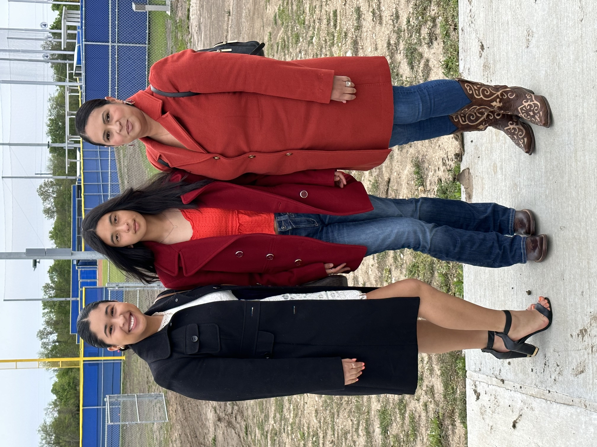

My Mom was born in a small village called Tizapan, all the way in the mountains. She was born there and spent little time in Mexico helping her family farm some fruit, with the likes of Mangos, Jicama, and squash. They would grow this produce and sell them at the lilttle Internet Cafe that they own. They are well loved in the community and loads of family members live there and well. She later moved with her family to Baytown Texas right before she started highschool and got accustomed to American culture, then later met my father.
She currently has been on a couple of interpretation jobs working for an agency that helps translate conversations and be the middle-person in a lot of medical meetings and bridges the gap in the conversations that they have. She works at home in order to take care of my Grandma, and enjoys spending the time with her mother. She also has a passion for binging Netflix with my sisters and hanging out with us as much as possible. She also used to play the saxaphone in Highschool and currently enjoys listening to us play our instruments.